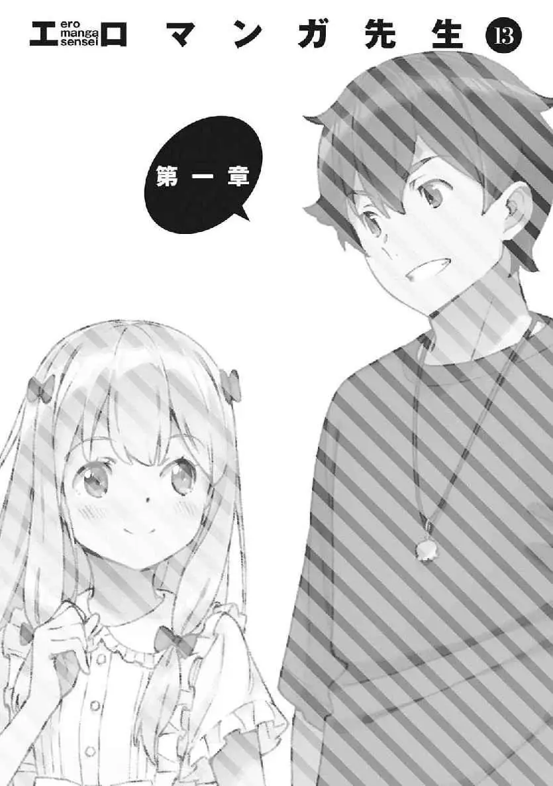
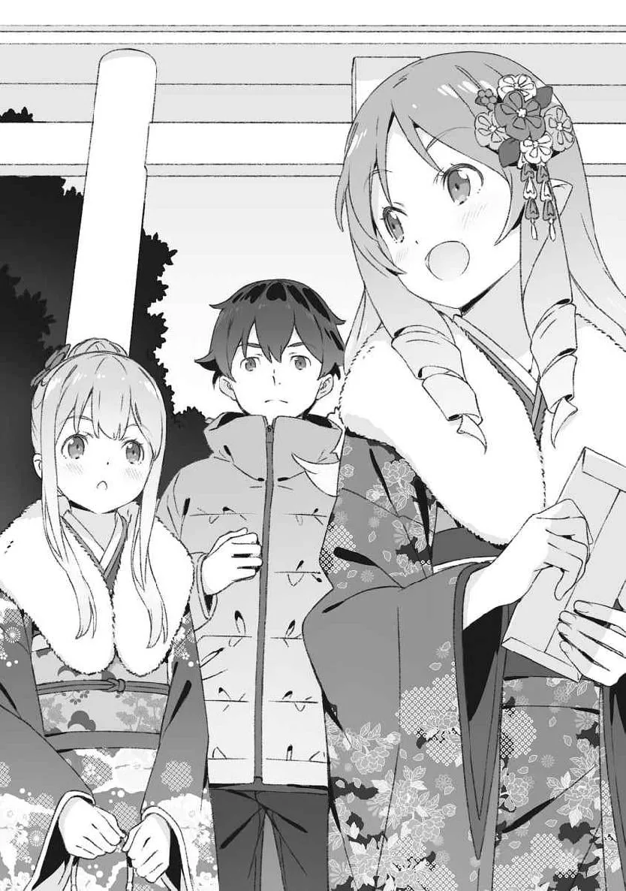
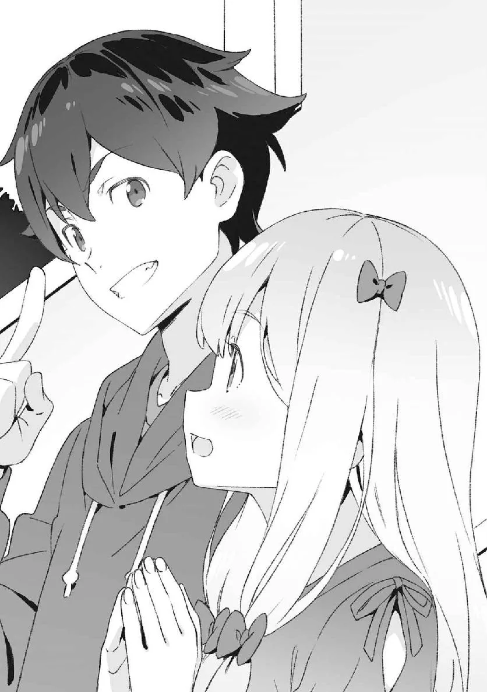

第一章
我是和泉正宗。十七岁的高二学生。
是一边上学一边写轻小说的兼职作家。
笔名是和泉政宗。
由于种种原因，从几年前开始，我和家里蹲的妹妹一起生活。
这样的生活，有一天发生了巨大的变化。
我知道了妹妹「隐藏的秘密」。
给我的小说画插画的插画家「埃罗芒阿老师」。
那个人就是我的妹妹和泉纱雾。
——这样的「前情提要」，不知重复了多少次。
十次？不，也许应该更多。
也许你已经感到厌烦了。
但是这次，希望能让我踏踏实实地说完。
因为这一定是最后一次。
「我与纱雾的故事」。不，「我们的故事」正渐入佳境。
如果用RPG来比喻的话，就是最终迷宫之前的最后城镇。
短暂的休息。
暴风雨前的宁静。
嗯，就是那种感觉。
先回想一下现状吧。慢慢地，一点一点地。
季节是冬天，十二月。
从冬COMI刚结束的那一刻开始。
让我们重新开始我们的故事吧。
走出五反野的车站，十二月的寒风刺痛了脸颊。
走在我旁边的妖精，猛地伸出双臂。
「哎呀~有种回到家乡的感觉了！」
「是啊，你搬来这边有段时间了。」
「对呀。我也算是个不折不扣的足立区居民了。」
从国外来的她能把这个城市当成自己的「老家」，对从小就住在这里的我来说，是一件很开心的事。
山田妖精。有着一头金色卷发的美少女。穿着看上去很暖和的大衣，很适合她。
她对我们兄妹来说，是非常特别的存在。
既是同行，又是尊敬的前辈，既是最强的对手，又是吵闹的邻居。
是最亲密的朋友。
然后，
——要让你们兄妹都成为我的人哦。
也是毫不顾忌地放出豪言「要把我们兄妹全部纳为己有」的情敌。
对纱雾来说，对我来说，都是情敌。
真是奇怪。
实在是太超脱常理了，该怎么说才好呢。真的莫名其妙。
但是有一点，我要明确地宣布。
我最喜欢纱雾了。全世界——不，是全宇宙最喜欢她。
我只想和一个人，和纱雾一个人谈恋爱。
这就是和泉正宗的恋爱观。
绝对不打算改变。
不管妖精是个多么有魅力的女孩。
即使纱雾想说「也许这样也可以」之类的话。
我也绝不会被影响的。
「政宗，我在家里准备了手工蛋糕，你就好好期待吧。」
「那就好。不过，要是太甜的话——」
「纱雾不吃，对吧？我知道。」
「不愧是你啊。」
她很善解人意，比谁都了解我们。
「其实是今天早上我和纱雾一起做的。哈哈，想让你吃吃看。」
「………………」
「你看，这个月太忙了，圣诞派对也好，生日派对也好，都还没办不是吗？所以……」
妖精理所当然地对着我露出一贯的笑容。
「今天是圣诞节，是冬COMI的庆功宴，也是纱雾的生日。」
「所以，如何呢？」
「……………………」
绝对！我绝对不会被影响的！
「政宗~ ？干嘛不说话啊。」
「啊，抱歉……就按你说的办吧。」
我顶着滚烫的脑袋毫不犹豫地回答。
因为《山田妖精的提案》对我们来说，一定是幸福、美好的东西。
从五反野站到我们家。
在路上，我和妖精并肩走着，身后有人叫住我们说。
「嘿，两位。」
「阿米莉亚，你怎么了？」
妖精回过头，对着双马尾少女回问。
给人一种狂野印象的她，是插画家爱尔咪老师。
本名阿米莉亚·艾尔梅里亚。
是妖精从小的好朋友。
不仅是厉害的插画家，还活跃在各种各样的创作活动中，是一位多才多艺的女性。这样的她，不知为何没有加入我们的对话，而是走在我们后面——
突然，她焦急地说。
「不知什么时候，村正老师不见了！」
「什么？」
我和妖精露出茫然的脸。
她停下脚步，环视四周，整理状况。
今天我、妖精、爱尔咪、纱雾(虽然是用平板电脑远程)四个人一起参加了冬季漫展。
发行了附带插画的小说本，成功地销售一空，盈利了。
在那里和村正前辈会合，现在正走在活动结束后回家的路上。
大家正在一起向妖精家移动。
可是，不知什么时候，村正前辈的身影不见了。
找遍了周围，也没有发现身穿和服的黑发美少女前辈的身影。我不安地问大家。
「对了……最后一次见到村正前辈是什么时候？」
「最后一次换车的时候，她还在呢。」
「那么，我们是一起坐电车的吧？那我们是在哪里走散的？」
拼命想要回忆的我们。
妖精给出了这样的证词。
「在五反野下车之后，我就没看见她了。她在车里做了什么，政宗你还记得吗？」
「不……这么说来，我完全不记得她有跟我说话。」
如果是平时，她一定会跟我说话的。
就像小狗一样，释放出强烈的「陪我玩」气息。
听到我的回答，妖精皱起了眉头。
「对，我也不记得在车里和村正说过话。阿米莉亚呢？」
「我看到她在看同人志，冬季漫展上给她的。」
「啊……」
我们瞬间明白了一切，快步返回车站。
「你们也太过分了吧！为什么把我丢在电车上？」
过了一会儿。在五反野车站检票口旁。
村正前辈正哭丧着脸朝我们怒吼。
「我在专心读书的时候，突然发现自己已经到竹冢了！我以为自己一直在和政宗君说话，后来才发现自己其实是在和一个陌生的幼儿说话！如果没有跟家长打招呼，说不定就直接去了终点！」
不由得想象起来。
她的视线落在同人志上，对着那对毫无关系的母女。
天真烂漫地叫着「政宗君！政宗君！」。
完全是个可疑人物。一不小心的话，应该会变成妖怪或都市传说之类的吧。
我在心里想笑，但还是满怀歉意地道歉。
「对不起前辈，没想到你没跟着我……」
「因为，谁知道你会走散呀？你又不是小孩子……我们也没什么不好吧？」
妖精愕然地说着，前辈的怒火又加了一把柴。
「呜呜呜……」
她咬紧牙关红着脸的样子，显得格外可爱。
这位黑发和服的美少女是千寿村正前辈。
她对我们兄妹来说也是很重要的存在。
是一位发行量超过一千万册的大作家。
伟大的同行前辈。
是与妖精齐名的挚友。
她是轻小说作家和泉政宗的狂热粉丝。
也是曾经向我告白过的人。
而且，如你所见，她还是个比我年轻的可爱少女。
妖精问脸红的村政前辈。
「对了，村政，你看的同人志……在会场上没看完吗？」
「当然是在重看一遍吧？」
「你回家再看啦。」
「怎么可能忍得住呢？书就在手上呢。」
「这个人说得理所应当的样子呢。」
爱尔咪苦笑着说:
「哈哈，要是跟村正老师一起去旅行的话，她可能会在途中就不见了。」
「哼，我没打算和你去旅行。」
「哦，埃罗芒阿老师——如果纱雾能出远门的话，我还想和大家一起去来着。村正老师不去吗？这样啊，太遗憾了。」
「不要排挤我！没有被邀请去冬季漫展的伤口会裂开的！」
「喂，爱尔咪，你可别欺负村正前辈啊。」
「好开心，好开心。」
你这人就喜欢欺负自己喜欢的女孩子。
解说起来就是——
在参加冬季漫展的时候，我们并没有邀请村正前辈。
我们会成为千寿村正的累赘。
因为这种保密的理由。
所以从刚才开始，她就因为「只有自己被排除在外」闹着脾气。
因为不能告诉她真正的理由，所以一直没有消除误会。
……各位渐渐地，想起来了吗？
我们的事。
讲述了和泉政宗和和泉纱雾所经历的无数故事。
如果还是没想起来，也请放心吧。
「总之，大家都顺利会合了。快点回去吧。」
「是啊，快走吧。」
如果见到埃罗芒阿老师的话。
肯定马上就能想起来了。
「「回到纱雾身边。」」
从五反野的车站走了一会儿……我们兄妹住的和泉家，旁边就是山田宅邸。那是被房东妖精称为「水晶宫」的豪宅。
最近，我和纱雾就住在水晶宫。
因为隔壁就是自己的家，我们兄妹来来回回，一会儿睡这边，一会儿睡那边。
每天都是这种感觉。
——听到这里，也许有人会感到惊讶。
那个极度怕生、一直闭门不出的纱雾，竟然住在朋友家了。
对。
纱雾的家里蹲症状，最近正在迅速得到改善。当然，本人的努力是最重要的因素，但最后推她一把的人，是妖精。
作为哥哥的我，既高兴又不甘心。
我怀着复杂的思绪，望向高大的府邸。
「哥哥！小妖精！小爱尔咪！还有小村正！」
从水晶宫的窗户对着我们。
宇宙第一的美少女正笑着挥手。
「欢迎回来！」
和泉纱雾。
她是我的女朋友，是和我互誓终身的人，是可以依靠的搭档，也是我的第一个粉丝——
「我回来了！埃罗芒阿老师！」
「我不认识叫这个名字的人！」
是我妹妹。
在山田宅邸的客厅里，派对开始了。
「生日快乐，纱雾。」
「嘿嘿……谢谢。」
纱雾纱站在大家的中心，显得有些不好意思。
「大家也辛苦了，卖完还盈利了，恭喜你们。」
「当然！这是我的社团！纱雾也是一员哦！」
妖精得意地挺起胸膛。
「虽然赚的钱不多。」
爱尔咪吐槽道。实际上，我们通过冬季漫展赚到的钱，光派对费就快用完了。
「虽说不是为了钱才来参加的——但对好不容易来的粉丝们，真是太过意不去了。」
「这次取得了成绩，下次应该增加发行量。」
「下次，一定要邀请我！这么有趣的企划，竟然不告诉我……恶意也要有个限度！」
村正前辈似乎很有意见。
这样的她，虽然激动，但拿起筷子吃蛋糕的姿势却很优美。
这个人几乎不用叉子。
「嗯，你们在笑什么？我可是在生气喔？」
「哈哈，对不起前辈。」
「不过，笑起来很正常，理由我就不告诉你了。」
刚才的对话。
——下次一定要邀我。
这样的台词。
代表我们作为作家的实力，得到了尊敬的千寿村正的认可。
我和妖精共享着这样的心情，相视而笑。
「又、又是只有你们两个人明白的感觉……！」
「好了好了，今天是个喜庆的日子，别生气了。」
爱尔咪手拿酒杯劝慰村正前辈。
「干杯，圣诞快乐！」
「圣诞快乐！」
大家都用自暴自弃的声音说。
今天是纱雾的生日派对，是冬季的庆功宴，是圣诞派对。
太高兴了，已经不知道是怎么回事了。
只要高兴——只要纱雾高兴，什么都可以。
「来，小纱雾。这是我们送的生日礼物！」
妖精探出身子，把纸袋递给她。
「诶……礼物？真正生日的时候我有收到过……不能再收一次。」
「没关系的！看看里面吧！一定会很高兴的！」
「诶诶？」
纱雾一脸困惑地接过礼物，看了看里面——
「啊～～～～～～～～～～～啊♡。」
发出了不像美少女的欢呼声。
她举起纸袋，就像拿到重要道具的林克一样。
我看到了她眼里的♡。
看到她高兴，我也很开心——不过这个反应实在有点可怕，我吓出一身冷汗问：
「这个……有那么棒吗？」
「当然！太高兴了～～～～～～～～～～♡我拜托你的同人志，你给我买回来了！」
她紧紧地抱着纸袋。
我们送给她的礼物，是一本冬季漫展发行的同人志。
这是替去不了现场的纱雾买来的。
当然，这些都是未成年人读也没问题的本子，请不要误会。
「嘿嘿……我一直在网上关注的孩子们的实物……终于……」
是真的。我没有说谎。没给她买多色情的本子……！
虽然她的言行完全像个大叔，但毕竟是埃罗芒阿老师，这也是没办法的事。
这是常有的事。
即使是这样，可爱就好。你高兴就好。
我咧开嘴说:
「要是每个月都有纱雾的生日就好了。」
「……政宗还是老样子，只要和妹妹扯上关系，就会变成怪人。」
太失礼了。
「对了，纱雾，我有个建议，你愿意听吗？」
「……怎么了，哥哥？」
她擦了擦口水，若无其事地恢复了冷静。
我对这样的妹妹说。
「大家一起去参拜吧？」
「大家一起……？我也一起？」
「当然。」
「……像往常一样，用远程的吗？」
「不，到外面去，和我一起。」
「是吗……」
纱雾惊讶地瞪大了眼睛。我用温柔的声音说:
「不行吗？」
「不，不行！人多的地方……还是不行！」
两眼紧闭，激烈地挥挥手。反应和预想的一样。
「那么，去『没有很多人』的地方呢？」
「……那样的话，也许……如果哥哥在一起的话……但是……」
「政宗君，哪有『没有很多人去参拜的地方』？元旦那天，到处都是人。」
村正前辈用常识性的方式吐槽道。
「是啊，所以……」
我点点头，恶作剧般地笑着说。
「明天去参拜吧。」
「政宗？明天还是今年啊。」
「我知道，前辈。……刚才，妖精不是说过吗？今天是纱雾的生日，圣诞节，冬季漫展，就这样吧。所以，今年就到今天为止吧。就当明天是一月一号吧。明天的话——人应该很少，纱雾也能一起去新年参拜吧？」
「哥哥……」
「哈哈，很像截稿时的艾米莉。」
「不光是我，畅销作家们都拥有操纵时间的特异功能！他们都是穿越时空回到过去完成原稿的！」
那为什么还会有新书都没发行就写小说的作家呢？
「新年第一次参拜啊——对政宗来说，这个提议不坏。呵呵……对我来说，今天是十月二十八日！但是明天就破例，就定为一月一日吧！」
山田妖精大老师，已经逃避现实两个月了。
截稿日期绝对不行了吧。尽管如此，她却能毫无罪恶感地玩耍。
是个大人物。虽然不想学。
这时，村正前辈用肩膀抵着我的肩膀。
妖艳地看着我，
「政宗君，你当然也会邀请我吧？」
「当然，不会把村正前辈排除在外的哦。」
「那就好。我本来就打算过完年就来玩的，提前几天也没什么大不了的。」
「决定了。」
妖精微微一笑。
很感谢大家的关心——但也不能撇下本人就热烈讨论起来。
「你觉得怎么样？实在不行的话，我还有别的方案……」
「没关系。」
纱雾缓缓地摇了摇头。轻轻一笑。
「我想去新年参拜，和大家一起去。」
「这样啊。」
我感到胸口一阵发热，微微一笑。
「那就去吧。一起去。」
「嗯！」
事情就是这样。
第二天。一大早，天还没亮，我们就从山田宅邸出发了。
冰凉的风清爽地抚过肌肤。
我伸了个懒腰，深呼吸。就在这时——
「政宗！久等了！」
一群身着盛装的女性打开玄关的门出现了。
比任何人都更适合穿和服的村政前辈自不必说，就连打扮华丽的妖精、散发出女性气息的爱尔咪，都向周围散发着强烈的魅力。
其中最引人注目的是身着盛装的纱雾。
就像真正的仙女一样。看到她穿泳装的时候，好像也用了很相似的比喻。明明是个作家，词汇量少，肯定会被骂——但她是仙女，这也是没办法的事。
和服纱雾，真是仙女。
「好厉害啊，大家都很好看——不过还是纱雾最好。」
「……谢谢你，哥哥。」
纱雾不好意思地握住我伸出的手。
两个人牵着手走了起来。
穿过水晶宫的大门，经过和泉家。
慢慢地，一步一步地。远离了一直闭门不出的那个房间。
每一步都蕴含着沉重的意义。
「不害怕吗？」
「没关系，我和大家都在一起。」
「是吗？」
「哥哥就在我身边，牵着我的手。」
「……这样啊。」
感慨万千，眼泪都要流出来了。
回头一看，是稍微变小了的和泉家。拐过这个拐角，就看不见了。
来到这么远的地方。
我们的父母再婚了，和泉正宗和和泉纱雾成了兄妹。
重要的家人不在了。妹妹变得闭门不出。
知道埃罗芒阿老师的真面目。
有了共同的梦想。
两人就这样走到了这里。
「马上就到啦，纱雾。」
「嗯。」
穿过石牌坊。
这一带，要说固定的新年参拜，应该是西新井大师一带吧。
要把纱雾去，还很困难。电车约会就暂时搁置了。
「果然没人啊。」
「不要闹得太大声。」
「呵呵，那就是日本的『狛犬』啊！」
妖精和村正前辈环视着空无一人的院内。
多少有些采访模式，是职业病吧。
我们提早几天来参拜的，是离和泉家很近的熟悉的神社。
周围没有高楼，抬头可以看见无垠的天空。
没有云，昏暗的天空渐渐染上了黎明的颜色。
冬天的早晨真好啊。
突然，脑海中浮现出这样的句子。
「村政老师，新年第一次参拜该怎么做呢？」
「你可以模仿我。」
「政宗，我们也去参拜吧！」
就在我发愣的时候，妖精他们已经向神社内前进了。
「哥哥，走吧。」
「嗯。」
我们慌忙的跟在后面，等着大家参拜。
「这次是特例。我会为了你们许下愿望的。嗯……那么，就祈愿你们两个和《世界妹》动画的工作人员身体健康吧。」
《世界妹》——《世界上最可爱的妹妹》是和泉政宗原作的轻小说。
动画预定在四月播放。
「谢谢你，小妖精。」
纱雾用自然的笑容道谢。
虽说已经可以外出了，但还很难说已经痊愈。
我小心翼翼地观察着纱雾的样子，目前看来应该没问题。
我安心地问妖精。
「对你来说，这个愿望太拐弯抹角了。『动画的成功』不行吗？」
「作品不是靠求神就能成功的东西吧？」
「你这么说倒也是。」
收回前言。这真是妖精式的愿望。
「呐，小妖精，你手里拿着厚厚的信封是什么？」
「香火钱。」
「这不是钞票吗？」

虽然很感激，但还是算了吧！这家伙真是……一旦不小心就会这样。
之前，我生日的时候，「一起玩这个吧！」说着，把游戏连同本体一起送给了我。
金钱观太豪爽了。
正当大家吵吵嚷嚷的时候，参拜完的村正前辈和爱尔咪回来了。
「喂，漫画家爱尔咪老师，你在东张西望什么？」
「嗯，不，我在找一个叫绘马的东西。」
「卖场不可能这么早就开门吧？」
「真的吗？我还挺期待的呢。」
爱尔咪真的很遗憾地垂下了肩膀。妖精拍了拍她的背。
「包在我身上！阿米莉亚！我早就买好了绘马，回家后大家一起画吧！」
「不愧是艾米莉！我爱你！」
「嘿嘿，我也是！」
「画绘马是好事，但画完后打算怎么办？要重新去供奉吗？」
村正前辈问道。
「当然是装饰在我的房间里，这不是很有意思吗？」
妖精大老师的自我评价达到了神佛的境界。
「你要把绘马供奉到妖精的房间里？听起来就像向你许愿一样。」
「呵呵，你可以向本山田大明神许愿……说不定会实现你的愿望哦。」
摆出贵族官员样子冒充神的妖精。
纱雾对着这样虚伪的神，闭上眼睛，双手合十。
「请让我看你脱掉胖次。」
「神会惩罚你的！」
「哥哥！小妖精打我！」
「……是埃罗芒阿老师不好吧？」
「我不认识叫这个名字的人。」
啊，怎么说呢。
今天神社里没有绘马真是太好了。
离开神社，我们踏上归途，前往山田宅邸。
出了家门，我和纱雾就一直手牵着手。
和心爱的她牵手。每次都感觉心脏快要爆炸，那是过去的事了。
现在，平静而满足的心情。当然还是会心跳加速啦。
温暖的幸福感，一直持续着。严冬的寒气，我一点也不在乎。
在这样的路上。纱雾突然对悠然走在最前面的妖精说道。
「小妖精？都已经过你家了，你要去哪里？」
「当然是荒川河堤。」
妖精回过头，得意地挺起胸膛。另一方面，纱雾则歪着头。
「说是当然……但小妖精总是解释得不够充分。」
「我大概知道了。」
「哥，真的吗？」
「啊，——纱雾，除了新年参拜，元旦早上还有什么活动？」
「嗯……吃年糕汤吗？」
「我做了很多，回去后吃吧？还有其他的吗？」
「吃年节菜吗？」
「年节菜的话，我带来了。这是我的自信之作，你可以期待一下。」
村正前辈说。
对了，我刚才在妖精家看到一个很大的食盒。
原来那是前辈亲手做的年节菜啊。
「当然，我也做了！呵呵……这是跟村正比厨艺的展开啊！」
「哦，真有意思。妖精——日本料理我绝对不能输！」
发出噼里啪啦的火花。
不不不，两位，话题扯太远了。
「纱雾，难道说你肚子饿了？」
「……才不是。」
她害羞地用鞋底「咚」的一声拍打着地面。
熟悉的「地板咚」声，说出了隐藏的真心话。
「你、你在笑什么？我明明说不是的……！」
「对不起对不起，早饭再等一下。」
别装模作样了，说正题吧。
仰望着太阳还没有升起的天空。
「好不容易在『元旦的清晨』出门。」
「去看新年日出吧。」
「还没到新年」，这种不解风情的想法已经忘得一干二净了。
大家一起走过通往河堤的天桥。
我从小就爬过无数次的楼梯。走过无数次的桥。
来往的车辆和噪音。废气的味道。
也不是什么观光名胜。
我还在这里踩过狗屎，甚至有肮脏的印象。
如果问当地居民城市的印象颜色，他们一定会回答灰色。
灰色城市里随处可见的过街天桥，对我来说，也是浸透灵魂的故乡景色。
走过天桥，来到河堤。
「太阳已经升起来了。」
「啊……可能错过了决定性的瞬间。」
我对感到遗憾的妖精和爱尔咪说道。
「现在正好。」
「为什么呢，政宗？」
「你看。」
我停下脚步，指着前方。
纱雾紧紧握住我的手。
「哇……」
下方的水面在朝霞的映照下熠熠生辉。
从这里眺望的晚霞和朝霞，是这座城市的宝物。
「这是我和家人的回忆。」
「哥哥的……爸爸和妈妈。」
「嗯，还有……跟纱雾的。」
「什么？」
突然这么说，她也不会懂啊。
「烦恼的时候，我经常……来这里。决定重要的事情的时候，总是在这里。那年春天……给某个人发邮件的时候也是。」
「……………………」
我说的这些话，在对话中是不成立的，不充分的。
但是，那是什么时候的事呢。
就算不说，也一定能传达到的。
「这样啊。」
「今天，回忆又增加了。」
「呵呵。」
手掌被握住了。
「政宗。」
纱雾这样称呼我。
和我们发展成男女朋友关系时叫的「正宗」，语气有些不同。
「让我们回到从前吧。」
和那时一样，成年男性的口吻。
非常令人怀念的触感。
「你要我怎么做？」
「你自己不是说过吗？跟我说回忆的时候，你好像很不好意思。」
「嗯。」
然后我明白了。
当时的我，比现在更愚蠢，更孩子气，更不顾一切。
不顾一切，满腔热血，一味较真。
不愧是勇者政宗的名字，是个大白痴。
——啊，是啊。
他是个毛头小子，却大言不惭地说要成为职业小说作家，在这种情况下，不可能不做那件事。
「好，做吧。」
「干吧！」
相视一笑。

然后，对着灿烂的朝霞，深深吸了一口气——
「《世界妹》的动画！哎～～～～～～～啊，一定要成功～～～～～～！」
两个人叫了起来。
「哈哈哈。」
「呵呵……」
我们都笑了出来。
让我们回到中二幼稚的孩子时刻，面对这个大挑战吧！
我们的作品，让更多的人看了，读了。
身为作者的我们，也要全力享受这个节日。
然后，实现梦想。
「忘了说了，新年快乐，哥哥。」
「嗯，新年快乐。」
今年也请多多指教，埃罗芒阿老师。
比我们晚了几天，世间也迎来了新年。
真正的一月一日。
第二个元旦。
话说回来，我们已经完成了各种各样的新年活动，就算过年了也没什么大不了的。如果非要举出与众不同的事……就是收到了贺年卡。
来自去年给了我很多关照的动画相关人士那里。
来自作家朋友。来自编辑部。
来自知道和泉政宗真实身份的同一所学校的读者那里。
来自和泉纱雾的同学们。
我一大早就看了。
有了这么开心的事的早晨，我兴高采烈地烤年糕，款待家人。
「真好吃，年糕有各种各样的吃法，真有趣！」
「政宗，再来一碗！要配酱油汁和海苔！」
「哥哥，我要黄豆饼！」
精神饱满地吃着年糕的是妖精、爱尔咪、纱雾。
住得远的村正前辈果然不在。
和大家的新年参拜已经结束了，第二个元旦好像要和家人一起度过。
「好了好了，等一下哦~ ~」
今天不是在妖精家吃早餐，而是在和泉家。
虽然没有特别规定，我做饭的时候，会在这边吃。
「哥，你好像很开心。」
「嗯，因为这几天我有机会做家务。」
「有机会……奇怪的说法。」
「也许吧。」
我笑得很开心。
妖精和纱雾帮我做了很多家务，我很感激你们……
说实话吧。我也想做家务啊！
想做饭，想打扫卫生，想把家收拾得漂漂亮亮！
和纱雾相依为命的那个时候，照顾妹妹，做主夫的工作，对我来说是快乐的事。
绝对不是不情愿。是因为喜欢才做的。
所以，我也会怀念起纱雾的地板咚。尽管我没有说出口。
「怎么了，哥哥？」
「不……能和你一起吃饭，真是太高兴了。」
当然，这也是真心话。
「呵呵，纱雾，政宗应该是……」
妖精微微一笑，来不及阻止。
「很想念家里蹲时的那种纱雾的感觉吧。」
「喂！」
干嘛说出来！话说，你一定读了我的内心独白吧？
已经超过了用敏锐洞察力就能解释的水平了！
「是吗，哥哥？」
「……有点。」
没办法只好承认。对于正在通过不懈的努力克服闭门不出的纱雾来说，这句话虽然有些过分，但说谎更没有意义。
「不过，你可别误会，我更高兴你能从家里蹲的状态中恢复过来。」
「嗯，我知道，我比谁都知道。」
纱雾温和地微笑着。然后说道，
「因为照顾喜欢的人，很开心嘛。」
心脏仿佛要停止跳动了。
纱雾大概也知道自己说了难为情的话。她羞得满脸通红。
「所以，轮流做吧。」
「嗯，好啊。」
今天轮到我了。
让我尽全力照顾你吧。
「咳咳咳——好难受啊！夏天到了吗？」
「政宗！我的年糕还没好吗？」
碍事的虫子们大声叫嚷着，把好气氛给吹散了。
我不觉得烦。倒不如说，是带着想大笑的心情说的。
「不好意思，我这就去。」
就这样——
第二个元旦。喧闹的早餐继续进行着。
「政宗，今天玩什么？」
妖精舔了舔嘴唇，问道。
「我已经玩过纸牌、双人六六和羽子板，我想在河堤上放风筝！」
看来妖精那家伙想完成《新年的游戏》。
我冷淡地回答她。
「我会正常工作的。」
「哈？ ！」
妖精双手捂着嘴，做出夸张的反应叫道。
「元旦就开始工作，你是傻瓜吗？」
「真是个没礼貌的家伙。元旦不是已经结束了吗？是你提议的。」
「可是，还没到正月吧？」
「已经休息够了，差不多该工作了。」
「你不是提前工作了很长时间吗？所以才能够参加冬季漫展吧？动画的录制也要到中旬才开始吧？最近也没有工作到截止日期吧？」
「动画脚本的监修，不管新年还是正月，都在不断地寄来呢。」
也就是说，动画相关人员中确实有几个人此时此刻也在工作。
「哇……」
当然，对方绝不会对原作者说什么「希望你过年也能工作」之类的话。
虽然没说……。
总觉得，能感觉到一种「你懂吧？」的暗示。也不是没有这样的想法。
真想对其他的轻小说作家和已经步入社会的人进行问卷调查。
这种时候，该怎么办才好呢？
「你应该和妖精一起玩啊！纱雾你也这么想吧？」
「有让身体好好休息的话，就随哥哥的便吧。」
「纱雾！」
不愧是我的搭档。你了解我的心情啊！
我从来没有说过「必须要工作」。
说的是「想工作」。
「唔唔……」
善解人意的妖精。就是明明知道，还邀请我出去玩吧。
纱雾无视见形势不妙而沉默不语的妖精，说道。
「哥哥……今天的工作结束后……可以和你商量一件事吗？」
「当然可以，什么事？」
我回问。
「我想在家外面……和小惠见一面。」
纱雾提出了这样的「要求」。
神野惠。纱雾的同班同学兼委员长。
有很多朋友的现充，非常爱多管闲事，还是埃罗芒阿老师和和泉政宗的粉丝。
对我和纱雾来说，重要的朋友。
「我想在家外面和小惠见面。」
虽说是有条件的，但现在可以出去了。
这几天，刚跟妖精、爱尔咪、村正前辈她们体会到——「和朋友在外面玩」的乐趣。
当然也想见惠了。
「好，包在我身上。我马上跟她联系。」
惠在LINE上发了贺年短信，我只要回复就行了。
「啊？现在马上？你的工作呢？」
「明天再做吧。本来我就只是想做，没有什么工作是必须马上做的。」
「政宗啊！你的态度和我邀请你出去玩的时候完全不一样了！」
我对愤怒的妖精说。
「啰嗦，我要优先考虑纱雾的要求。」
「你居然说出了大魔王一样的话！真是的！你这家伙真没出息！」
抱歉了妖精——我在内心道歉，但还是用手机给惠发送了新年问候，传达了纱雾的愿望。
结果没过几秒钟就收到了回复。
「好快啊！」
不愧是惠，立刻回复。
我偶尔会想，现充是不是魔法师呢。
「哥哥，小惠怎么说？」
「嗯……」
——十点之后，在高砂书店见吧。纱雾，Come on♪
「她是这样说的。」
字里行间仿佛能看到惠笑着挥手的样子。
「高砂书店……」
「车站前的书店，智惠家开的。」
「……过年的时候，去书店？」
为什么？纱雾歪着头。
当然，我也不知道。
今天是元旦。
书店不是都关门了吗？
兄妹二人凑在一起，虽然感到不可思议，但还是向高砂书店走去。
和妖精她们分开行动了。她们为了充分享受新年的乐趣，已经向河堤出发了。
我们也做好了外出的准备，正要在玄关穿鞋的时候。
「恭贺新年。」
一个穿着睡衣的美女睡眼惺忪地走了过来。
身体摇摇晃晃，似乎还没睡够。
她是——
「小京香！新年快乐！」
「新年快乐，京香姑姑。」
我慌忙移开视线，向她拜年。
和泉京香。
是我们哥哥妹妹的监护人。
对我来说，是血脉相连的姑姑。
最后，最重要的家人。
「你们两个要出去吗？」
「嗯！」
「是的，去见朋友。早餐我已经准备好了，请吃吧。」
「谢谢……对不起，我起晚了……」
「不不。」
「……压岁钱……一会儿给你……所以……」
「谢谢。」
京香姑姑昨晚参加了应酬的忘年会，很晚才回来。
你一定很累了吧。
现在也是半睡半醒的样子，平时那种凛然的气质消失了。
「京香酱！ 京香酱！」
「……啊，什么事啊，纱雾。」
她的声音有些无力。纱雾则用有些担心的语气说:
「睡衣前面的扣子都开着。」
「嗯，是啊……是啊……」
「不行，这个人……大概有九成还在梦中吧……」
「哥哥，不许看！」
纱雾从背后捂住了我的眼睛，我的视野一片漆黑。
「我、我马上移开视线了，所以没看到。」
「这样也不行！」
你说怎么办？我对状况已经尽了全力了吧。
又过了十秒、二十秒、三十秒……
「那个……纱雾？这样下去要到什么时候？」
「我在脑内画素描，你等一下。」
看来埃罗芒阿老师已经确保了新的作画资料。
结束玄关处的小意外后，我们手牵手向五反野车站方向走去。
「你稍微习惯出门了吗？」
「嗯，虽然只有一点点。」
「是吗？」
这是个好趋势。习惯也好，在路上也好，慢慢走吧。
清爽的街道。
纱雾则好奇地环视着四周。
就像幻想世界的妖精来到这个世界观光一样。
那倒也正常。
纱雾最近才渐渐能外出了。
但是——
「像这样慢吞吞地走，以前可没有过啊。」
「你说什么了，哥哥？」
「下次再去散步吧，你喜欢的话。」
「嗯，一起。」
「对，一起。」
因为是元旦，所有的店都关门了。
等再习惯外面一点，想跟她在这个城市一起购物。
不是特别的地方也可以。比如我经常去的超市——两个人一边聊天一边买晚饭用的东西，提着购物袋走在回家的路上。
我希望这样的日常生活有一天能到来。
「高砂书店在哪里？」
「就在车站旁边，你看，已经看得见了——」
我指着前方看了看。
然后。
「咦？」
眼前出现了令人意外的景象。
「店开着吧？」
对。是开着的。明明是元旦。不仅如此，
「啊！哥哥，纱雾酱！新年快乐啊～～～～～～♪」
穿着围裙的惠在店门口迎接我们。
「小惠！」
「你在干什么？」
「这不很明显吗！！」
「我就是因为不懂才问的。」
「咦？就是这个，这个啊。」
惠用全身动作指向的地方，是一辆装有大量纸袋的展台推车。
「在卖『高砂书店特制福袋』！」
「哦～～～～」
纱雾可爱地张着嘴感叹道……我的疑问依然没有消除。
为什么从正月开始就开门营业呢？
为什么惠会做一些店员的事情呢？
高砂书店的福袋是什么？
和惠交谈得越多，问题就越多。
「欢迎光临，正宗君。」
这时救主出现了。
浮现出柔和的笑容，穿着围裙的黑发少女。
她是高砂智惠。是我的同班同学——我的朋友吧。
「智惠！新年快乐！」
「嗯，新年快乐。欢迎光临纱雾。」
「啊！新年快乐！」
纱雾有点紧张。
赶快进入正题吧。
「喂，今天怎么了？大过年的，还开门呢。」
「不光是我们，最近书店都很不景气，所以我们在尝试各种各样的政策。」
智惠即使在抱怨经济不景气的时候，也丝毫没有忧郁的感觉。
作为朋友，我很喜欢这样的人。
我一如往常地问道。
「所以才卖福袋？——里面装的是什么？」
「当然是书的福袋！没袋都是我亲自挑选装袋的！」
原来如此，那确实是「高砂书店特制福袋」。
「可是，实体店不是不能打折吗？」
「没错，有再贩卖价格维持制度，规定书店里的书不能打折。所以，只要加上点数，把书以外的商品组合在一起，就能得到实惠的福袋。」
「嗯嗯。」
仔细一看，福袋上贴着书签，上面写着《甜~蜜的故事》、《十部经典推理小说》、《今年必读的轻小说》等内容的倾向。
价格也分好几个等级，有好几种可选的形式。
既然书本身不能打折，那么在「书的组合」方面，就很难达到统一的价格了。
「您要一个吗，客人~」
惠用略带可疑的语气谄媚道。
这家伙最近好像越来越H了……。
如果我不是有世界上最可爱的女朋友，说不定早就被诱惑买了一堆福袋了。
「我说智惠……这位新店员是怎么回事？」
「只在年末年初让她帮忙，报酬是借她『高砂智惠推荐轻小说五十选』。」
「哦？」
这个报酬的话，我也超想要的。
「是啊！我喜欢上轻小说是当然了，可是零花钱不够啊！中学生也没办法打工啊！」
一个月只能买三本，惠因此垂下了肩膀。
我觉得她是个非常好的读者。
初高中生就是这样用有限的零花钱买作品来读的。
这是非常难得的——对我们这些作家来说，这是不能忘记的沉重事实。
不知道纱雾是否理解了我的这种想法，她对着店员打扮的惠竖起了一根手指。
「小惠，给我一个福袋。」
「谢谢你，纱雾酱。你要哪个？」
「嗯……这个『超划算！动画化作家描写战斗少年的轻小说！』吧。」
「啊！」
智惠一脸「糟了」的表情动摇了。
纱雾被吓得肩膀一颤。
「怎、怎么了吗？」
「嗯，那一袋……还是不要了比较好……吧？」
「……为什么？」
「哎~ ~…………」
智惠难以启齿地移开视线。
我大概明白了事情的原由，偷偷看了看钉书机钉起来的袋子里的东西。
「果然！全都是我写的小说！」
「……被发现了吗？」
智惠露出可爱的舌头。
我的手颤抖着。
「你、你这家伙……把朋友倾注灵魂写的书，放进便宜的福袋里？」
「宗、宗君，你误会了！」
「误会什么了！还附带高级咖啡套餐，超划算的！」
这是咖啡本身吧。我的自尊心受到了严重的伤害！
「我觉得和电子书的降价政策相比，我们推出的那些不能降价的促销活动根本不值一提。」
「提出了站在我的立场上，无法轻易回答的问题，你是不是想蒙混过关？」
「没有啦没有。不过，我想说的是……」
看到我愤愤不平，书店店员把禁止卡片拿了出来。
「你要是对我生气，就去抱怨电子书降价吧。」
「呜……」
说了这么狡猾的话……！
「如果不是这样，就不公平了。」
呜……唔……。
被逼得走投无路的我，紧紧闭上双眼——
「我认为这是争取新读者的绝佳措施。」
「宗君好弱啊！」
「哇，哥哥太小气了~」
智惠和惠笑着对我无情的回礼。
纱雾轻抚着我的背，安慰我。
「在公共场所说电子书的坏话不太好，没办法。」
「纱雾……」
对她的爱越来越深……因为一些无聊的理由……。
「不开玩笑了。」
智惠说，脸上还残留着一丝笑意。
「我不得不把你的书放进福袋里，是因为『和泉政宗特区』做得太平常了，希望你能原谅。」
既然如此，那也没办法。
因为至今以来，高砂书店已经推荐了很多『和泉政宗』和《世界妹》。
「话说回来，我从一开始就没那么生气。」
书店也好，粉丝也好，有时甚至是反对。
读了我的书，分享感想的所有人，都是对作品人气的贡献者，都是作者应该感谢的人。责备他们，我做不到。
「是吗？那我就放心了。」
智惠和我微笑着缓和气氛。
刚才我不自觉地提高了嗓门，实际上，几乎是在开玩笑。
包括福袋和降价政策在内，书店和出版社策划的宣传活动，都是为了让更多人读到我们的作品，这是毋庸置疑的事实。
我斩钉截铁地断言，但这并不是值得生气的事情。我很感激——我应该这么想。
多少还留有一些言外之意，请原谅。
有给我五百日元零用钱的读者，也有很多帮助我出版这本书的人。和我自己融入书中的心意。
有很多，太多了……。无论如何，我都会对降价感到抱歉。
这是个很难的问题。
「总之，换一袋吧。——纱雾。」
「嗯……那就这个吧。」
纱雾小心翼翼地重新挑选了一遍，买了一个装有《甜~蜜的故事》的福袋。
像这样，我们自己也靠「实惠的福袋」买了书。
下次见到《甜~蜜的故事》的作者时，我很难告诉他:「因为你的书放在福袋里，所以读了。」
我也许没有资格生气。
……不，应该有一点吧？大家觉得呢？
「要好好读啊，哥哥。」
「是啊。」
重重地点了点头。我瞄了一眼福袋里的东西，作者名叫狮童国光。
……………………………………怎么办？
我用福袋买了朋友的书。
「智惠真是太聪明了，谢谢你这么给我造成精神负担。」
「不用客气，我和你很熟嘛。」
「进入正题，我们是被惠叫到这里来的。纱雾想和惠见面。」
「是吗，纱雾酱！好高兴～～～～～～～～～～～～～♡」
惠感激地一把抱住她。
纱雾被紧紧地抱着，看起来很痛苦，但也很开心。
「惠……我能出来了……所以……」
「嗯！嗯！一起出来玩吧！」
我微笑着看着两人的对话……
「所以……我……那个……」
「四月份开始……我要去学校了。」
我和惠的尖叫响彻高砂书店。
平稳的年初结束了，故事加速走向佳境。
休息到此为止。
让我们开始和泉政宗和埃罗芒阿老师最后的故事吧。